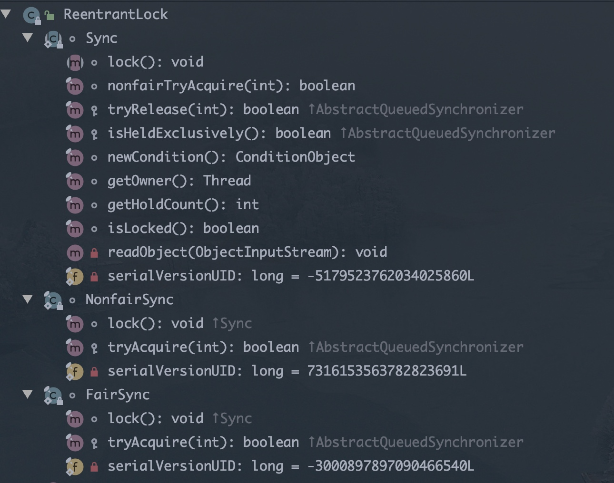
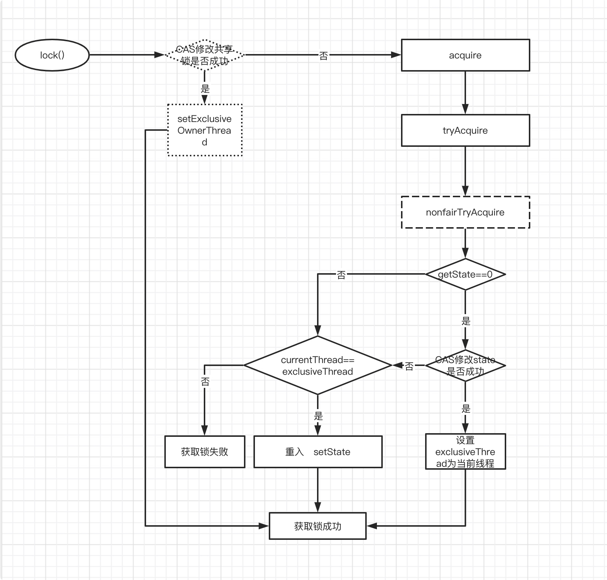

- 什么是可重入，什么是可重入锁? 它用来解决什么问题?
- ReentrantLock的核心是AQS，那么它怎么来实现的，继承吗? 说说其类内部结构关系。
- ReentrantLock是如何实现公平锁的?
- ReentrantLock是如何实现非公平锁的?
- ReentrantLock默认实现的是公平还是非公平锁?
- 使用ReentrantLock实现公平和非公平锁的示例?
- ReentrantLock和Synchronized的对比?
ReentrantLock 类结构
ReentrantLock内部存在3个实现类，分别是Sync、NonfairSync、FairSync，其中 Sync 继承自 AQS 实现了解锁 tryRelease() 方法，而 NonfairSync(非公平锁)、 FairSync(公平锁)则继承自 Sync，实现了获取锁的 tryAcquire() 方法，ReentrantLock的所有方法调用都通过间接调用AQS和Sync类及其子类来完成的。
什么是可重入
简单的说的话就是同一个线程对于已经获得到的锁，可以多次继续申请到该锁的使用权。
重进入是指任意线程在获取到锁之后能够再次获取该锁而不会被锁所阻塞， 该特性的实现需要解决以下两个问题：
- 线程再次获取锁。锁需要去识别获取锁的线程是否为当前占据锁的线程， 如果是，则再次成功获取。
- 锁的最终释放。线程重复 n 次获取了锁，随后在第 n 次释放该锁后，其 他线程能够获取到该锁。锁的最终释放要求锁对于获取进行计数自增，计数表示 当前锁被重复获取的次数，而锁被释放时，计数自减，当计数等于 0 时表示锁已 经成功释放。
nonfairTryAcquire(int acquire) 方法增加了再次获取同步状态的处理逻辑: 通过判断当前 线程是否为获取锁的线程来决定获取操作是否成功，如果是获取锁的线程再次请求，则将同步状态值进行增加并返回 true，表示获取同步状态成功。同步状态表 示锁被一个线程重复获取的次数。
如果该锁被获取了 n 次，那么前(n-1)次 tryRelease(int releases)方法必须返回 false，而只有同步状态完全释放了，才能返回 true。可以看到，该方法将同步状 态是否为 0 作为最终释放的条件，当同步状态为 0 时，将占有线程设置为 null， 并返回 true，表示释放成功。
公平锁和非公平锁
公平锁是指所有试图获得锁的线程按照获取锁的顺序依次获得锁，而非公平锁则是当前的锁状态没有被占用时, 当前线程可以直接占用,而不需要等待。在实现上，非公平锁逻辑基本跟公平锁一致，唯一的区别是，当前线程不需要判断同步队列中是否有等待线程。
非公平锁性能高于公平锁性能。首先，在恢复一个被挂起的线程与该线程真 正运行之间存在着严重的延迟。而且，非公平锁能更充分的利用 cpu 的时间片， 尽量的减少 cpu 空闲的状态时间。
使用场景的话呢，其实还是和他们的属性一一相关，比如:如果业务中线程占用(处理)时间要远长于线程等待，那用非公平锁其实效率并不明显，但是用公平锁可以保证不会有线程被饿死。
public ReentrantLock(boolean fair) {
sync = fair ? new FairSync() : new NonfairSync();
}
ReentrantLock 的构造函数中，默认的无参构造函数将会把 Sync 对象创建为NonfairSync 对象，这是一个“非公平锁”;
而另一个构造函数 ReentrantLock(boolean fair)传入参数为 true 时将会把 Sync 对象创建为“公平锁” FairSync。
nonfairTryAcquire(int acquires)方法，对于非公平锁，只要 CAS 设置同步状态成功，则表示当前线程获取了锁，而公平锁则不同。
tryAcquire 方法，该方法与nonfairTryAcquire(int acquires)比较，唯一不同的位置为判断条件多了 **hasQueuedPredecessors()**方法，即加入了同步队列中当前节点是否有前驱节点的判断，如果该方法返回 true，则表示有线程比当前线程更早地请求获取锁，因此 需要等待前驱线程获取并释放锁之后才能继续获取锁。
非公平锁的实现流程：

/** ReentrantLock 锁的基础同步器，实现有公平和非公平两种同步器 */
abstract static class Sync extends AbstractQueuedSynchronizer {
abstract void lock();
/**内部使用的是CAS原子性操作设置state值，可以保证state的更改是线程安全的*/
final boolean nonfairTryAcquire(int acquires) {
final Thread current = Thread.currentThread();
int c = getState();
//判断同步状态是否为0，并尝试再次获取同步状态
if (c == 0) {
if (compareAndSetState(0, acquires)) {
setExclusiveOwnerThread(current);
return true;
}
}
//如果当前线程已获取锁，属于重入锁，再次获取锁后将status值加1
else if (current == getExclusiveOwnerThread()) {
int nextc = c + acquires;
if (nextc < 0) // overflow
throw new Error("Maximum lock count exceeded");
//设置当前同步状态，当前只有一个线程持有锁，因为不会发生线程安全问题，可以直接执行 setState(nextc);
setState(nextc);
return true;
}
return false;
}
/**
* 试图在共享模式下获取对象状态，此方法应该查询是否允许它在共享模式下获取对象状态，如果允许，则获取它
*/
protected final boolean tryRelease(int releases) {
int c = getState() - releases;
// 当前线程不是 独占线程
if (Thread.currentThread() != getExclusiveOwnerThread())
throw new IllegalMonitorStateException();
boolean free = false;
// 如果释放了所有的锁，要清空独占线程
if (c == 0) {
free = true;
setExclusiveOwnerThread(null);
}
// 设置 state 状态
setState(c);
return free;
}
/**
* 判断资源是否被当前线程持有
*/
protected final boolean isHeldExclusively() {
return getExclusiveOwnerThread() == Thread.currentThread();
}
final ConditionObject newCondition() {
return new ConditionObject();
}
/**
* 返回独占资源的线程
*/
final Thread getOwner() {
return getState() == 0 ? null : getExclusiveOwnerThread();
}
final int getHoldCount() {
return isHeldExclusively() ? getState() : 0;
}
/**
* 资源是否被占用
*/
final boolean isLocked() {
return getState() != 0;
}
private void readObject(java.io.ObjectInputStream s)
throws java.io.IOException, ClassNotFoundException {
s.defaultReadObject();
setState(0); // reset to unlocked state
}
}
/** 公平锁实现，在判断!hasQueuedPredecessors() */
static final class FairSync extends Sync {
final void lock() {
acquire(1);
}
protected final boolean tryAcquire(int acquires) {
final Thread current = Thread.currentThread();
int c = getState();
if (c == 0) {
//注意！！！这里先判断同步队列是否存在结点
if (!hasQueuedPredecessors() &&
compareAndSetState(0, acquires)) {
setExclusiveOwnerThread(current);
return true;
}
}
else if (current == getExclusiveOwnerThread()) {
int nextc = c + acquires;
if (nextc < 0)
throw new Error("Maximum lock count exceeded");
setState(nextc);
return true;
}
return false;
}
}
/** 非公平锁实现 */
static final class NonfairSync extends Sync {
final void lock() {
// 执行CAS操作，获取同步状态
if (compareAndSetState(0, 1))
// 成功则将独占多线程设置为当前线程
setExclusiveOwnerThread(Thread.currentThread());
else
acquire(1); // 再次请求同步状态
}
protected final boolean tryAcquire(int acquires) {
return nonfairTryAcquire(acquires);
}
}